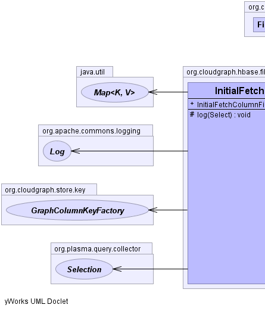
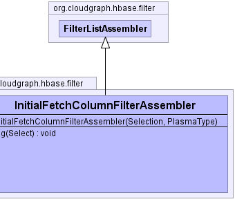

public class InitialFetchColumnFilterAssembler extends FilterListAssembler
GraphColumnKeyFactory,
CompositeColumnKeyFactory,
GraphFetchColumnFilterAssembler|  |  |
params, rootFilter, rootType| Constructor and Description |
|---|
InitialFetchColumnFilterAssembler(org.plasma.query.collector.Selection collector,
org.plasma.sdo.PlasmaType rootType) |
| Modifier and Type | Method and Description |
|---|---|
protected void |
log(org.plasma.query.model.Select root) |
clear, getFilter, getParamsCloudGraph® is a registered trademark of TerraMeta Software, Inc. Copyright © 2014 - All Rights Reserved.